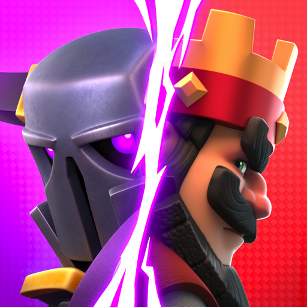

Actualmente estoy cursando el último año de la carrera de informática. En mi tiempo libre, una de mis mayores pasiones es el fútbol. Formo parte de un equipo con el que juego todos los sábados, lo que me permite mantenerme activo, disfrutar de la camaradería y fortalecer el trabajo en equipo.
Además del fútbol, los videojuegos son otra de mis grandes aficiones. En PC, disfruto de títulos como Hollow Knight, un juego que destaca por su arte y su desafío, y Fortnite, conocido por su dinámica y estrategia. En cuanto a juegos de teléfono, paso buenos momentos con Clash Royale y Brawl Stars, que ofrecen partidas rápidas y entretenidas.
Estas actividades no solo me permiten desconectarme y relajarme, sino también disfrutar de aquello que realmente me apasiona.